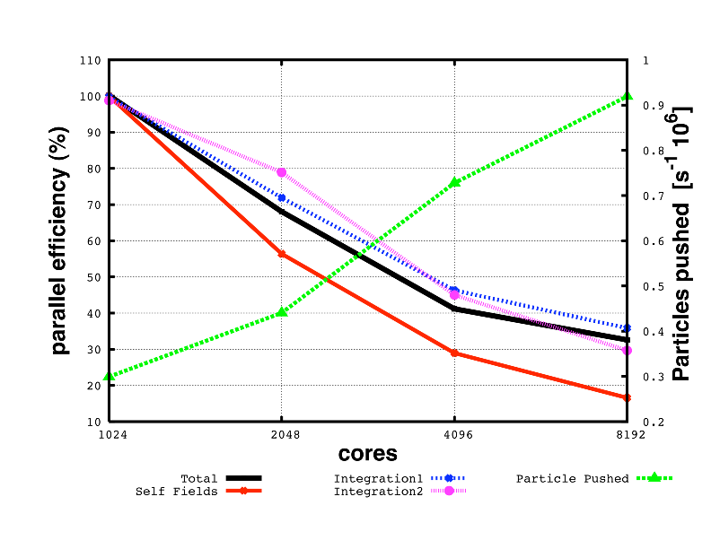
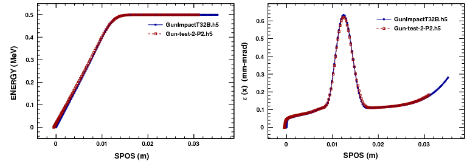

1 Introduction
1.1 History
Using the MAD language with extensions, OPAL is derived from MAD9P and is based on the CLASSIC library [1], which was started in 1995 by an international collaboration. IPPL (Independent Parallel Particle Layer) provides the parallel particles and fields using a data-parallel approach and was inspired by POOMA [2].
OPAL-T can be used to model guns, injectors, ERLs, and complete XFELs.
OPALX also uses an extended MAD language, but with a modernized implementation targeting performance portability and accelerator physics workflows on current CPU and GPU platforms.
1.2 Project Resources and Getting Started
The public project pages at https://opalx-project.github.io collect the current landing-page material for both OPAL and OPALX. The published manual is available at https://opalx-project.github.io/Manual/, and the OPAL mailing list can be joined via the subscription page at https://psilists.ethz.ch/sympa/subscribe/opal. For a broader overview of current use cases and publications, see https://opalx-project.github.io/OPAL-References.
If you are starting with example problems, the following entry points are the most useful:
- https://opalx-project.github.io/Examples/Cyclotron.html
- https://opalx-project.github.io/Examples/RFPhotoInjector.html
- https://opalx-project.github.io/Examples/AWAEEXBeamline.html
- https://opalx-project.github.io/Examples/AWADriveLinac.html
- https://opalx-project.github.io/Examples/RegressionTestExamples.html
- https://opalx-project.github.io/Examples/FFA.html Users working at PSI can additionally consult https://opalx-project.github.io/Using-OPAL-at-PSI.
For OPALX, user-facing material is still sparse. The current public entry point for execution and build instructions is https://hpce.pages.psi.ch/merlin7/05-Software-Support/opal-x/.
1.3 Tools
The project pages list a small set of supporting tools around the core simulation codes:
runOPALprovides Python scripts to launch and automate multiple jobs, including parameter scans.pyOPALToolsprovides pre-processing, post-processing, analysis, and plotting utilities for simulation data.- OPAL conversion utilities provide format-conversion helpers.
For OPALX, these tools are still evolving; the most stable interfaces remain the manual, the source repositories, and the regression/documentation pages.
1.4 Parallel Processing Capabilities
OPAL is built to harness the power of parallel processing for an improved quantitative understanding of particle accelerators. This goal can only be achieved with detailed 3D modelling capabilities and a sufficient number of simulation particles to obtain meaningful statistics on beam properties such as emittance, slice emittance, and halo extension.
The following example is representative:
| Distribution | Particles | Mesh | Greens Function | Time steps |
|---|---|---|---|---|
| Gauss 3D | \(10^8\) | \(1024^3\) | Integrated | 10 |
Figure 1.1 shows the parallel efficiency time as a function of used cores for this test example. The data were obtained on a Cray XT5 at the Swiss Center for Scientific Computing.

1.5 Quality Management
Documentation and quality assurance are given very high priority because adequate documentation is a key factor in the usefulness of a code such as OPAL for present and future particle accelerators. With source control, Doxygen documentation, and a maintained user manual, the aim is to provide both users and co-developers with state-of-the-art documentation.
One non-trivial test case is the PSI DC gun. Figure 1.2 shows a comparison between IMPACT-T and OPAL-T.

Misprints and obscurity are almost inevitable in a document of this size. Comments and active contributions from readers are therefore welcome.
1.6 Output
The phase space is stored in the H5hut file format [3] and can be analyzed using H5root and H5PartROOT-style post-processing workflows [4]. The frequency of phase-space and statistical output is controlled by the relevant OPTION statement flags such as PSDUMPFREQ and STATDUMPFREQ.
A SDDS-compatible ASCII file with statistical beam parameters is written to a file with extension .stat.
For postprocessing we recommend pyOPALTools, which contains many tools for pre-processing, post-processing, analysis, and plotting output data.
The level of stdout can be tuned with the --info <level> argument:
1: coarse status and rare critical events2: normal progress and run summaries3: detailed algorithm progress4: fine-grained implementation details5: full debug or trace output
For production runs we suggest level == 1 or level == 2, for example:
opalx inputfile.in --info 11.7 Change History
For the legacy manual, change history currently lives in the release notes set that is still maintained in the Asciidoctor tree.
1.8 Known Issues and Limitations
The current OPAL issue tracker is:
1.9 Acknowledgments
The contributions of various individuals and groups are acknowledged in the relevant chapters. A few individuals have or had particularly strong influence on the development of OPAL, including Chris Iselin, John Jowett, Julian Cummings, Ji Qiang, Robert Ryne, Stefan Adam, Christian Baumgarten, J. Scott Berg, Yuanjie Bi, David Bruhwiler, Chris Cortes, Martin Duy Tat, Matthias Frey, Philippe Ganz, Colwyn Gulliford, Yves Ineichen, Tulin Kaman, Christopher Mayes, Xiaoying Pang, Valeria Rizzoglio, Chuan Wang, Jianjun Yang, and Hao Zha.
1.10 Citation
Please cite OPAL using [5].
No stable OPALX citation entry is defined yet in this pilot.